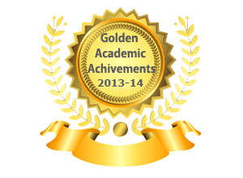

Vision of Sri Chaitanya
The spirit of Techno Schools is to make every child competitive and a complete person by our integrated programs for Pre-Primary, Primary and High school. It helps in understanding and implementing the core essentials of life through :
Morals : The ability to discriminate right and wrong
Values : The unique beliefs and feelings of an individual
Ethics : The principles of behavior
Problem Solving Techniques : The skill of resolving difficulties
Positive Attitude : The highest form of healthy personality
Sri Chaitanya Techno School & Star Kids brands are licensed from Varsity. More than 500 Sri Chaitanya branded schools run Varsity Techno programs and Varsity proprietary test-prep courses such as ICON, NEON and MEDICON.
The Right Mentor
Sri Chaitanya has been the right mentor and pioneer for IIT – JEE aspirants since 1986. The pioneers to this concept are Dr B.S. Rao and Dr. B. Jhansi Laxmi. The institution that started with career oriented integrated teaching at the Intermediate level grew in leaps and bounds with branches across 17 districts in the state of Andhra Pradesh and 7 states across the country. The enterprise did not end there, the vision to prepare students for professional courses at the school level itself began to evolve over the years. The objective was to impart concept based analytical approach to teaching early in academics in order to ensure a professional career for the student : be it IIT, AFMC, CA, Civil Services, Management or Defence Services.
Management Team
Sri Chaitanya Techno Schools provides a platform for a complete and contemporary educational experience for children.
The schools facilitate a comprehensive learning environment that comprises of a broad curriculum with a complete program using the current technology.
The curriculum is framed by well versed academicians after an expansive research in their disciplines.
The child centred curriculum is designed in modules suitable to the class by the Co-ordinators and the Resource Team.